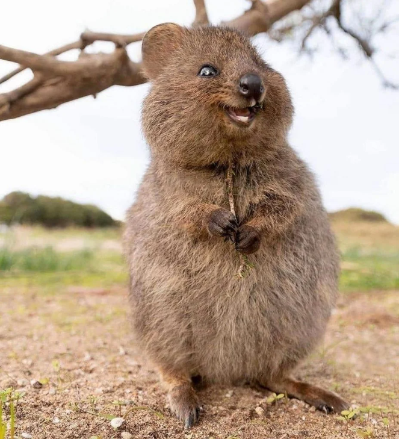

Quokka

O quokka (Setonix brachyurus) é um pequeno marsupial australiano conhecido por seu sorriso simpático e aparência amigável. Ele é considerado um dos animais mais felizes do mundo!
Características
- Peso: entre 2,5 e 5 kg
- Comprimento: até 54 cm
- Pelagem marrom acinzentada
- Cauda curta
- Herbívoro
Habitat
Os quokkas vivem principalmente na ilha Rottnest, próxima à costa da Austrália Ocidental. Eles preferem áreas com vegetação densa, onde podem se esconder de predadores.
Curiosidades
- O quokka ficou famoso nas redes sociais por suas selfies sorridentes com turistas.
- É um animal noturno e muito sociável.
- Apesar da aparência fofa, é importante não alimentá-los ou tocá-los na natureza.
Wiki
Página criada para fins educativos.